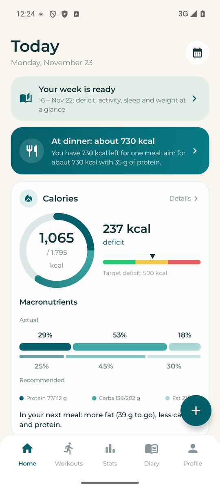
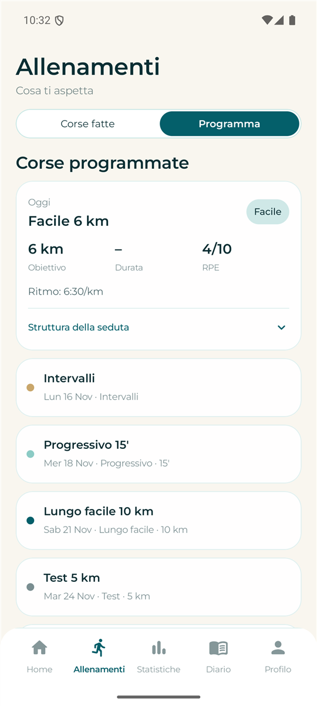
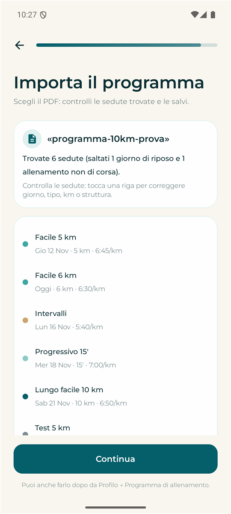
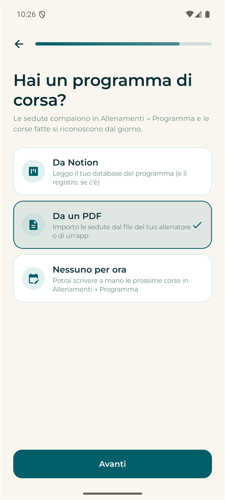
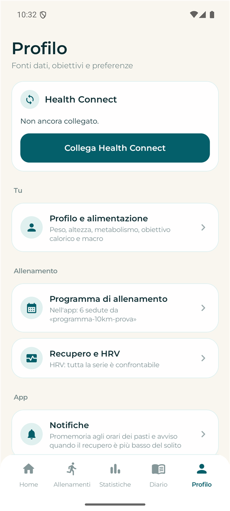

Apri una schermata e sai come stai oggi e che corsa ti aspetta. Gratis, open source, senza account: i dati restano sul tuo telefono.
Android 8 o successivo · File APK, circa 30 MB · Nessuna pubblicità

Il sonno sta nell'app dell'anello, le corse in quella dell'orologio, i pasti in un'altra, il programma in un PDF. UNICUM legge tutto da Health Connect e lo mette insieme.
Importi il PDF (o il database Notion) e le sedute compaiono già divise per giorno, tipo, km e ritmo.
Corri con il tuo orologio: quando apri l'app la seduta di oggi è già fatta, con parziali, zone cardiache e mappa.
Dall'HRV notturna, dal sonno e dal carico degli allenamenti: capisci se oggi puoi spingere o è meglio andare piano.
Il consumo a riposo matura durante la giornata: alle 8 di mattina non hai già "bruciato" 1800 kcal.
Samsung Health, Garmin, Fitbit, Oura, Ultrahuman e tutte le app che scrivono in Health Connect.
Niente account, niente server, niente abbonamento. Il codice è pubblico e chiunque può controllarlo.




Per pubblicare un'app, Google chiede a chi sviluppa da solo una prova con almeno 12 persone per 14 giorni. Ti serve un telefono Android e un account Google: non devi essere un esperto, e nemmeno un runner.
Il tuo indirizzo serve solo a Google per darti accesso alla prova. Non ricevi pubblicità.
Un PDF che l'app non legge, un orologio che non manda i dati, una cosa che cambieresti: ogni segnalazione finisce in una versione migliore.